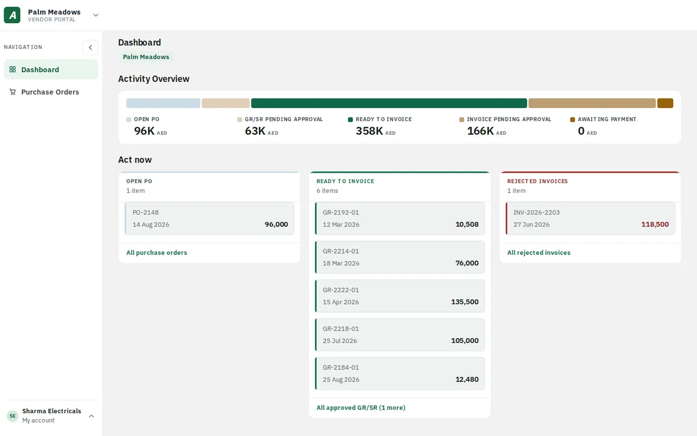
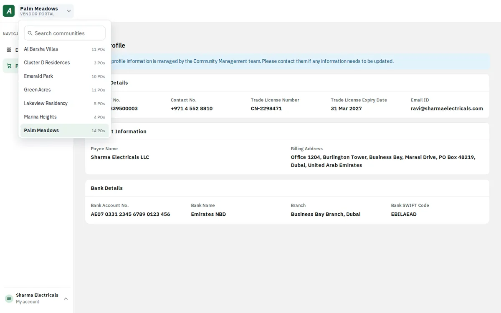
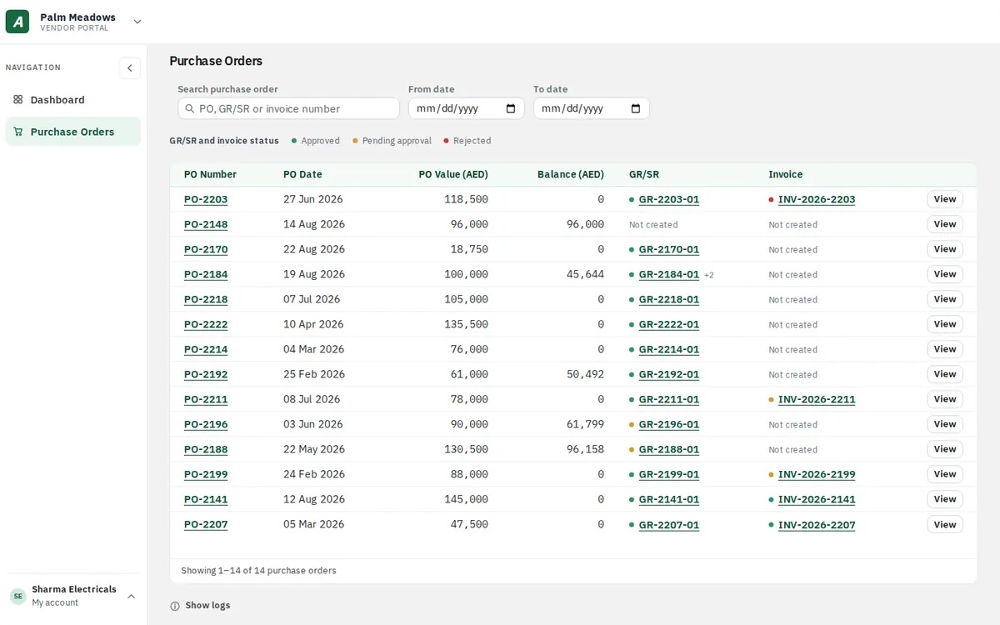
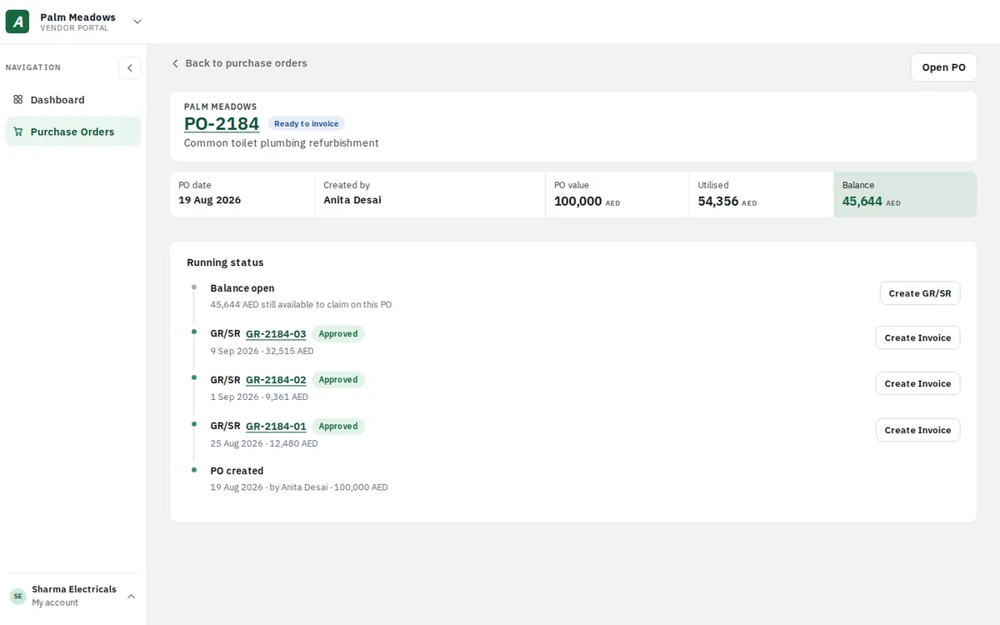
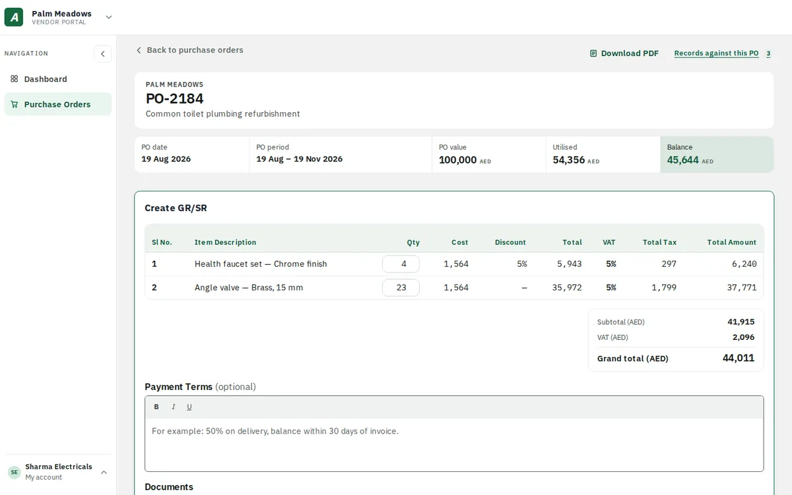
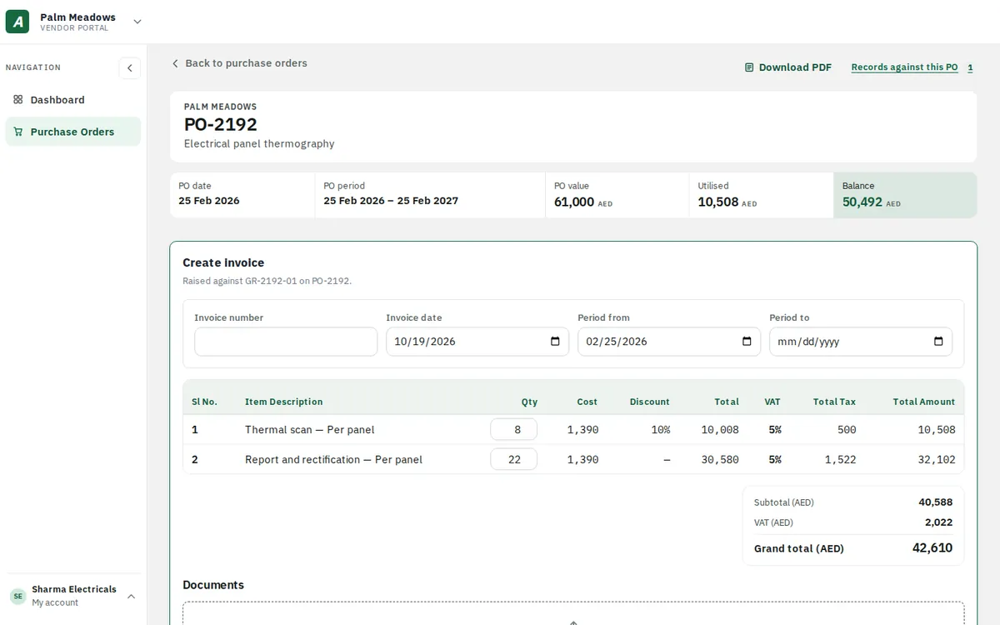
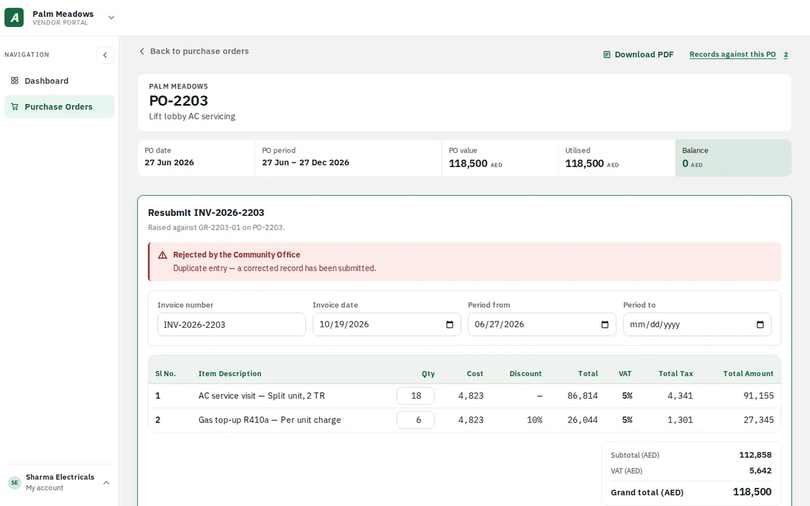
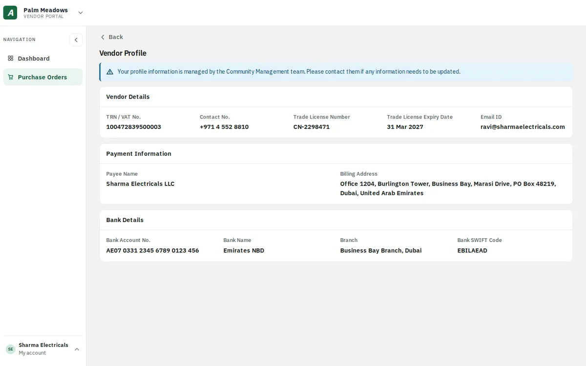

Letting vendors submit deliveries and invoices themselves, checked at the point of entry, approved by the office.
PROBLEM
The office re-keyed every vendor delivery and invoice, twice.
SOLUTION
A two-screen vendor portal: a dashboard that says what’s next, and POs that hold every GR/SR and invoice.
IMPACT
Typed once · quantity & balance checked at entry · every submission kept as sent.

01 · OVERVIEW
From re-keying to self-service.
KEY TAKEAWAYVendors submit; admins approve. Each side keeps what it’s best at.
PRODUCTADDA ERP · Expense Tracker + Vendor Portal
USERSVendors, community admins, approvers
MY ROLESenior Product Designer
WORKED WITHProduct, web engineering & QA
YEAR2026
PLATFORMWeb (vendor portal + ERP)
Communities buy from 100+ vendors per property. Every purchase runs PO → delivery (GR/SR) → invoice → payment inside ADDA’s Expense Tracker, but only the office could type it in. This project gave vendors their own portal to submit deliveries and invoices, while admins keep approvals, GL accounts and payments.
MY RESPONSIBILITIES
→Designed both sides: the Vendor Portal and the ERP approval screens
→Defined sign-in, validation and error copy with PM
→Mapped multi-property accounts, invites and merges
→Prototyped the end-to-end flow, handed off and ran design QA
02 · PROBLEM
The office re-keyed every vendor delivery and invoice into ADDA by hand.
KEY TAKEAWAYThe vendor had the data. The office typed it, twice.
Vendors sent delivery notes and invoices by email or WhatsApp. Someone in the office typed each line into Expense Tracker, checked it against the PO balance by eye, then did it all again when the invoice arrived.
Double entry, missed balance checks, duplicate records, no trace of what the vendor actually sent, and a phone that kept ringing with “is it approved yet?”
WhatsApp · Al Safa Supplies Delivered 8 floor cleaners today, invoice to follow 📎
Email · Office Retyping DN-4412 into Expense Tracker… is the PO balance enough?
Call · Vendor “Hi, is my GR approved yet? And why was the last one rejected?”
03 · PAIN POINTS
Six pains from the FS.
KEY TAKEAWAYSix pains, all caused by one person typing for another.
P1Everything typed twiceThe office keyed the GR/SR, then keyed the invoice’s amounts, VAT and lines again.
P2No PO balance checkStaff cross-checked amounts against the remaining PO balance by hand, easy to miss across 100+ vendors.
P3Audit gapsNo record of what the vendor submitted, because admins created or edited entries for them.
P4DuplicatesThe same GR/SR or invoice could be raised twice, by the vendor and the admin.
P5Status follow-upsVendors called to ask if a GR/SR was approved, why it was rejected, or if an invoice was paid.
P6Profile confirmationsVendors asked the office to confirm TRN, trade licence and bank details on file.
04 · GOALS
What success looks like.
KEY TAKEAWAYSuccess = enter once, check instantly, approve the original.
USER GOALS
→Vendors submit deliveries and invoices without the office
→Know the next action and every status without calling
→Never over-bill a PO by mistake
BUSINESS GOALS
→Validation at entry, not at approval
→Admins keep approval, GL and payment authority
→An untouched original for audit
1×
data entry, invoices reuse the approved GR/SR lines
2 checks
automatic: PO quantity and PO balance
0 edits
by admins to a vendor’s submission
05 · USER STORIES
Written from both sides.
KEY TAKEAWAYStraight from the FS, vendor and admin side by side.
STORY 01
As a Vendor, I want to sign in with my email and a one-time code, no password, so that I can access my transactions securely.
STORY 02
As a Vendor, I want to see what is waiting on me and on the office, so that I know my next action without searching.
STORY 03
As a Vendor, I want to create a GR/SR against an approved PO and be stopped from exceeding it, so that I submit deliveries without the office and never over-bill.
STORY 04
As a Vendor, I want to create an invoice against an approved GR/SR, so that I bill what was approved without retyping lines.
STORY 05
As an Admin, I want to configure approvers in up to two levels, so that vendor submissions follow our internal controls.
STORY 06
As an Admin, I want to see vendor submissions without being able to edit them, so that the original stays intact for audit.
→One Primary Email ID = one portal account, many properties
→Sign-in code valid 5 minutes, 3 attempts
→Qty ≤ PO quantity minus earlier non-rejected GR/SRs
→GR/SR total ≤ remaining PO balance
→One pending GR/SR per PO at a time
→Invoice number unique per vendor per property
09 · CHALLENGES
The hard parts.
KEY TAKEAWAYStrict enough to protect the PO, forgiving enough for real deliveries.
01
Two products, one flow
A vendor portal and the ERP had to feel like one handover.
02
Secure without passwords
One-time codes, lockouts and clear recovery copy.
03
Many properties, one login
A property switcher that filters every screen, or shows all.
04
Strict but forgiving validation
Block over-billing while allowing short deliveries.
05
Audit integrity
Admins act on submissions without changing them.
10 · PROCESS
How I got there.
KEY TAKEAWAYRules and messages first; screens second.
01
Audit
Today’s re-keying flow
02
Map
Accounts × properties
03
Define
Rules & every message
04
Flow
PO → GR/SR → invoice
05
Wireframe
Portal & ERP screens
06
Design
Hi-fi, both products
07
Prototype
End-to-end flow
08
Ship
Handoff & QA
11 · SOLUTION
Eight decisions, mapped to the pains.
KEY TAKEAWAYEight decisions, each traceable to a pain point.
FEATURE 01A dashboard that says what’s nextActivity Overview shows money at every stage, from Open PO to Awaiting payment. “Act now” lists only the records waiting on the vendor, oldest first.fixes P5
FEATURE 02Every community, one loginOne Primary Email ID maps to every community the vendor supplies. The switcher shows each one with its PO count.fixes P5

FEATURE 03Purchase orders with a live balanceValue, balance and the latest GR/SR and invoice for every PO, with green, amber and red status dots.fixes P2fixes P5

FEATURE 04A running status on every POPO created, each GR/SR and the open balance on one timeline, with the next action beside each step.fixes P5

FEATURE 05Create GR/SR, validated as you typeLines come from the PO. The vendor only enters delivered quantities; totals, VAT and the balance check update instantly.fixes P2fixes P4

PO PO-2026-0418PO VALUE AED 3,000.00UTILISED AED 1,000.00BALANCE AED 2,000.00
{{l.name}} AED {{l.cost}} + 5% VAT · {{l.avail}} available{{l.q}}AED {{l.total}}Quantity cannot exceed the {{l.avail}} available on this PO.
Exceeding the balance PO amount. This GR/SR totals AED {{grand}} against a remaining balance of AED 2,000.00. Reduce the quantities to continue.
GR/SR submitted. It has gone to the Community Office for approval. We’ll email you when they act on it.
Grand total AED {{grand}}
Try it: push a quantity past what’s available, or raise both lines until the total beats the PO balance.
FEATURE 06Invoices that reuse the GR/SRRaised against an approved GR/SR, so every line is already there. The vendor adds the invoice number and period.fixes P1

FEATURE 07Rejections that explain themselvesA rejected invoice comes back with the Community Office’s reason, ready to resubmit. The original stays on record.fixes P3fixes P5

FEATURE 08A read-only profileTRN, trade licence, payee and bank details as registered, so vendors stop asking the office to confirm them.fixes P6

12 · EDGE CASES
Edge cases, handled.
KEY TAKEAWAYAccounts, sign-in and approvals all have a clear answer.
✓Too many wrong codes Sign-in pauses for 15 minutes, with a way to contact the admin.
✓Email changed to an existing account The property merges in, no duplicate account, history kept.
✓Inactive in one property Only that property disappears from the portal.
✓PO fully delivered “Nothing left to deliver”, with a shortcut to raise an invoice.
✓GR/SR already pending on a PO The form locks until the office acts.
✓Approver submitted it themselves Another approver at that level must approve.
✓Short delivery The approver is warned before accepting a lower quantity.
✓Profile differs between properties The field shows “–” instead of picking one.